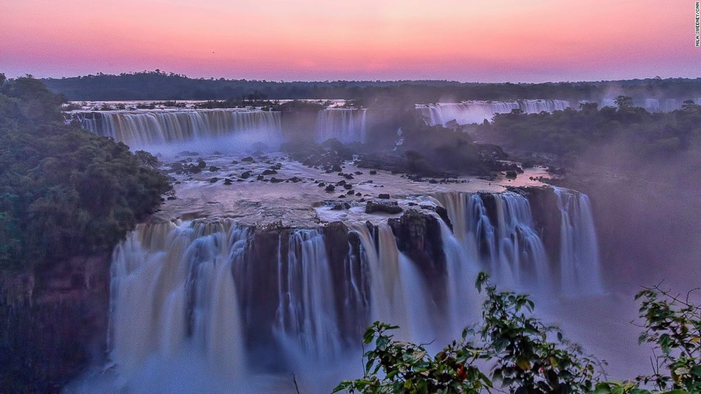

Мне очень интересно все что касается сферы электронной техники и компьютеров. Свое свободное время я провожу за изучением материалов по новым изобретениям техники и просмотра будущих концептов. Если мне хочется как-то развлечься, то я всегда могу запустить на компьютере какую-нибудь видеоигру для времяпрепровождения в одиночку или с друзьями по сети. Если бы мне нужно было выбрать место для путешествия, то я бы отправился к водопадам Игуасу.
Игуасу — это каскад из 275 водопадов на одноимённой реке сразу в двух странах: Бразилии и Аргентине, одна из главных достопримечательностей Южной Америки. Водопады находятся на территории национального парка, расположенного тоже в обеих странах. Над водопадами нередко можно наблюдать большую радугу. Испанский конкистадор, исследователь Нового Света Альвар Нуньес Кабеса де Вака в 1541 году искал в джунглях сокровища Эльдорадо. Золото он не нашёл, зато обнаружил водопады. В Игуасу созданы условия для туристов: тропы со смотровыми площадками проходят и снизу, и сверху — на мостках под падающей водой вы увидите панорамные виды парка. Весь каскад можно обогнуть за 2–3 часа, протяжённость самого длинного маршрута — около 3 км. Также на Игуасу есть кемпинги, гостиницы и кафе.